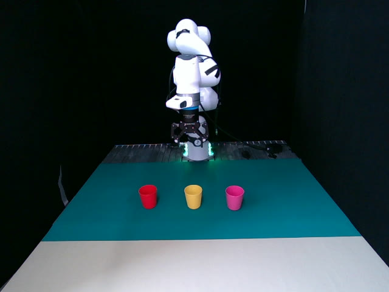

We collect 362 trajectories of “pick up the yellow cup and place it on the plate” and 220 trajectories of “stack the cups”. Using Qwen3.5-VL as the backbone, we train two VLAs that differ only in their tokenizer—QwenFAST and QwenCATok. CATok is pretrained on the collected real-robot data together with InternA1 joint data, so that its action reconstruction accuracy matches that of FAST.
Pick-Spatial10 fixed cup-plate positions × 2 rollouts. Tests spatial generalization.Pick-ColorUnseen red cup, fixed position × 10 rollouts. Tests color generalization.

Stack-LongStack two cups in sequence × 40 rollouts. Tests long-horizon completion.
Rollout comparison
PickPick (Red)StackQwenCATokoursQwenFAST
Figure 8 · Real-world rollout comparison. Top row: QwenCATok (ours); bottom row: QwenFAST. Each cell is a single, unedited end-to-end rollout.
Method
Pick-Spatial
Pick-Color
Stack-Long
QwenFAST
0.45
0.30
0.275
QwenCATok (Ours)
0.65
0.50
0.475
Table 2 · Real-world success rates. QwenCATok improves over QwenFAST by +20pp absolute on all three tasks.